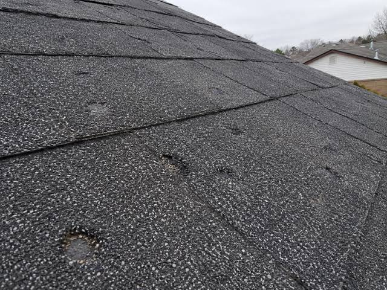

Explainable hail damage scoring, verified by AI, for insurance claims
92-95%
Hail Detection Accuracy
70%
Inspection Time Saved
4x
Fraud Case Growth
40-50%
Fraud Reduction
Hail is one of the most frequent and costly perils insurers face, and one of the hardest to assess fairly. Manual inspection after a storm is slow and inconsistent, which creates a backlog of claims and leaves room for inflated or fraudulent ones to slip through.
Travelers has spent seven years building real geospatial capability: a National Catastrophe Command Center that tracks weather in real time, a proprietary platform that flags impacted properties before claims are filed, and over 700 FAA-certified drone pilots. They already use Nearmap's ImpactResponse imagery at sub-3-inch resolution after major storms.
"We know the precise size of hail that impacts an area. Since we're armed with customer location data and know the type of damage certain diameter hail causes, we can estimate with reasonable certainty the severity of the losses." Chris Day, Travelers Catastrophe Response
That confirms they already have hail size tied to location. What's missing is AI verification at the individual property level.
Several companies are already active in this space, including one Travelers already works with.
ImpactTriage and ImpactAssessment AI for tiered damage classification. Travelers already uses this platform.
Uses generative AI to compare before and after aerial images and can initiate claims within minutes.
326 AI patents and an AI-driven claims triage system, with a new partnership announced this year.
Drone imagery for roof inspections. Carriers using it resolve up to 1.5x more claims per day.
Hail-specific autonomous drones that distinguish real damage from false positives.
Across the industry, AI-enhanced fraud cases grew from 20,000 in 2022 to over 80,000 in 2025, a 4x increase in three years.
Eye in the Sky pairs two systems: a rules-based severity score, and an AI model that verifies damage from photos. Together, they help Travelers triage properties faster after a storm.
Every claim photo runs through a metadata check before an adjuster sees it, flagging things like a missing GPS coordinate or timestamp. It only flags for review, a human adjuster still makes the final call, so the process stays fast for honest claims while catching the ones that need a second look.
We're recommending a phased pilot: one region, one hail season, run alongside Travelers' existing process to directly compare results before a wider rollout.
This isn't a mockup. Here's an actual roof photo run through our AI model, with the real output it produced.

Asphalt composition shingles with multiple circular hail impact marks and localized granule loss. Several impacts expose the darker shingle mat, consistent with moderate damage that would shorten shingle life and likely require repair.
This proposal is built by a two-person team pairing insurance-relevant physics with hands-on model design.
Material Science & Thresholds
Defines the impact thresholds for how different roofing materials respond to hail.
Model & Pipeline Design
Designs the scoring pipeline and model that turn that data into one damage assessment.